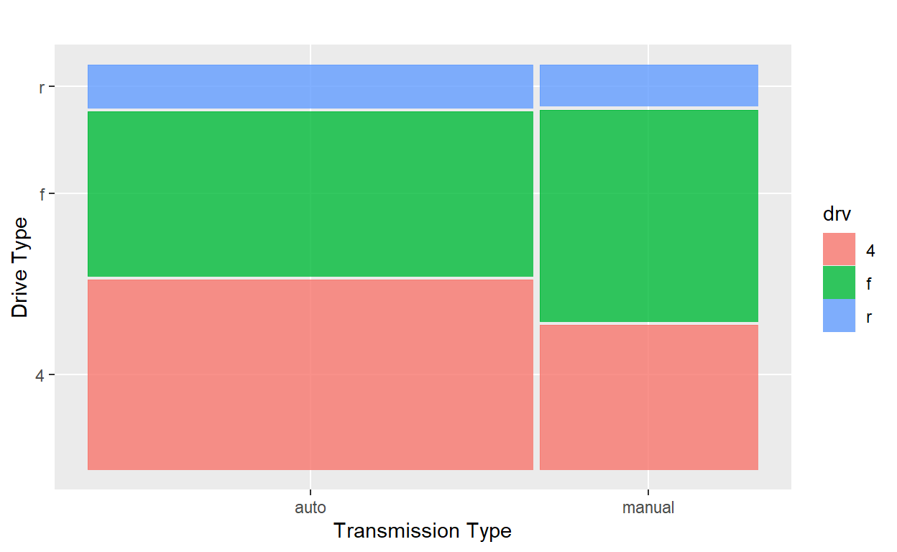

Topic 4: Data Visualization
Through this workbook you’ll learn techniques for data visualization. You’ll think about how the type of plot chosen impacts what information is conveyed. Choosing the wrong plot type can result in at-best a useless plot, and at-worst a plot which is misleading. Think about the types (numerical, categorical) of variables you are working with and how they dictate which plot type should be utilized – for example, a scatterplot is not appropriate in every scenario!
Objectives
Workbook Objectives: After completing this workbook you should be able to:
- Read a plot, describe any interesting features, and accurately convey the story being told by the plot.
- Identify and utilize the most appropriate plot types for your scenario by identifying the types of variables you are working with.
- Utilize color, size, and shape to show additional dimensions of data in a plot, but also recognize that adding more information to a plot negatively impacts our ability to read the graphic.
- Use your newfound knowledge of data visualization to generate informative plots which uncover a compelling (and truthful) story about the relationships that exist between variables.
The Grammar of Graphics
Grammar of Graphics: Jeffrey Gitomer said “Your grammar is a reflection of your image”. Here, we take the converse literally. Your image is a reflection of your grammar. Just like a well-written sentence follows the rules of grammar, so does an informative statistical graphic.
- Graphics need a subject (an underlying dataset)
- Graphics need verbs (a type of plotting structure, called a
geom) - Graphics need adjectives (attributes attached to the visualized data, called
aesthetics) - Graphics need context (a title, scales, axes, legends, etc.)
In this workbook we explore ggplot2 and think about graphics in terms of their layered grammar.
A Note on Plots: Choosing an appropriate plot is extremely important in data visualization. Some plots don’t make sense for certain variable types. For example, a scatterplot in the case of two-categorical predictors is quite a silly choice – the only thing this plot tells us is that every combination of fuel type and engine brand exists in our dataset. We have no idea which combinations are most or least popular.

The following are some recommended [basic] plots types under certain scenarios:
- A single numerical variable: A histogram, boxplot, violinplot
- A single categorical variable: A bar plot
- Numerical versus Numerical: a scatterplot, heatmap
- Numerical versus categorical: side-by-side boxplots, side-by-side violinplots, stacked or overlayed histograms
- Categorical versus categorical: barplot with fill color, mosaic plot, heatmap
Getting Started: Exploring Data
Throughout this workbook, we will explore fuel efficiencies of multiple classes of vehicles using the mpg data frame.
- Remember that a data frame is like an Excel spreadsheet. Explore the
mpgdata frame by typingmpgin the following code block and running it.
mpggrade_code()Notice that when you execute a line of code which just calls the name of a data frame, a snippet of that data frame is printed out. This is true for other objects (variables, vectors, functions, etc) in R as well.
Some Basic Exploratory Functions: It is useful to know more about your dataset when you first start working with data. R has a few exploratory functions which you should know about: names(mpg) prints out a list of names of your data frame’s columns, head(mpg) will show you the first six rows of the mpg dataset, dim(mpg) will show you the number of rows and columns in the dataset, and glimpse(mpg) will show you information about how R is treating the columns (int and num denote numerical values while chr and fct represent character strings and categorical variables respectively). Use the code block below to try each of these functions and use the output to answer the following questions:
The diamonds data frame is also available to you. See if you can get your basic exploratory functions to help you answer the same questions about the diamonds dataset using the code block below.
Were you able to get this to work? Be sure to ask a question if not!
Building and interpreting plots
The code below creates a plot of highway miles per gallon (hwy) against engine displacement displ (a measure of the size of an engine).
ggplot(data = mpg) + geom_point(mapping = aes(x = displ, y = hwy))
Use the plot above to answer the following questions.
A Note on Plotting Structure: Using ggplot() to create plots in R is daunting at first, but with practice you will notice the structure is very consistent and convenient!
- Our plot consists of at least two pieces (subject and verb),
ggplot(data = mpg)tellsggplotthat the subject of our plot is the data contained in thempgtable, while thegeom_point()verb tellsggplotthat we want our data displayed as points (a scatterplot). Theaes()inside ofgeom_point()tellsggplotsome of the adjectives for each individual observation – here, just the location! - In general a simple plot takes the form (where the objects in all caps are replaced by your data frame, desired geometry type, and aesthetic mappings).
ggplot(data = DATA) + geom_TYPE(mapping = aes(MAPPINGS))
Use the code block below to make a scatterplot of average city miles per gallon (cty) explained by engine displacement (displ).
ggplot(data = mpg) + geom_point(mapping = aes(x = displ, y = cty))grade_code()Now make a scatterplot of average highway miles per gallon (hwy) exlained by number of cylinders (cyl).
Notice that this plot isn’t very useful because the cylinders variable takes on very few levels. We may be better off if we treat cyl as if it were a categorical variable here. Check out some of the other geometry layers available to you in ggplot here. Try building a set of side-by-side boxplots. If you get an error, be sure to read it – R suspects that the plot produced wasn’t the one you wanted and provides a suggestion.
ggplot(data = mpg) + geom_boxplot(mapping = aes(x = cyl, y = hwy, group = cyl))grade_code()Consider the variables for vehicle class (class) and drive type (drv).
Use the code block below to make a useful plot of class using geom_bar() with the aesthetics x = class and fill = drv. Think about the plot you create – what does it tell you?
ggplot(data = mpg) + geom_bar(mapping = aes(x = class, fill = drv))grade_code()Note: There are many different geom types, and different aesthetic properties which can be passed to geoms. We will see examples throughout the rest of this workbook, but reading the entirety of Chapter 3 in Hadley Wickham’s R for Data Science would be a great start for those of you who are more interested in data visualization.
Plotting more than two variables at once
Let’s go back to our original plot of hwy versus displ. Maybe we want to color the points in the scatterplot according to the class of the vehicle. Add a third asthetic, color = class to the code below and re-run the plot.
ggplot(data = mpg) + geom_point(mapping = aes(x = displ, y = hwy))
ggplot(data = mpg) + geom_point(mapping = aes(x = displ, y = hwy, color = class))grade_code()There’s a lot going on here, and it is hard to read. Try copying the above plotting command, but appending facet_wrap(~ class, nrow = 2) as a new layer to the plot – notice that plot layers are added with the + symbol. Again, think about the resulting plot and how it compares to your previous colored plot. We’ll discuss this in the small groups this week too.
ggplot(data = mpg) + geom_point(mapping = aes(x = displ, y = hwy, color = class))ggplot(data = mpg) + geom_point(mapping = aes(x = displ, y = hwy, color = class)) + facet_wrap(~ class, nrow = 2)grade_code()Categorical Variables
We’ve seen plots for categorical variables earlier in this workbook. Let’s revisit a barplot with fill, similar to the one we constructed between class and drv earlier and check two alternative plots which give different insights. We’ll explore the transmission variable (I’ve stored a more usable version of the trans variable as trans2) and the drive variable (drv).
From the plot below we can tell that there are about twice as many vehicles in our dataset with automatic transmissions as there are with manual transmissions. The problem is that it is difficult to compare the proportions of drive types within each of these classes. We can fix this by using the position argument. Outside of aes() but still within mapping() add an argument position = "fill" to the pre-built plot – you’ll need to include a comma after aes() since commas separate arguments. Think about what is gained and lost in this new plot.
mpg$trans2 <- str_sub(mpg$trans, 1, -5) #We create a copy of the transmission column but only include either 'auto' or 'manual'ggplot(data = mpg) + geom_bar(mapping = aes(x = trans2, fill = drv))ggplot(data = mpg) + geom_bar(mapping = aes(x = trans2, fill = drv), position = "fill")grade_code()Great! But the problem now is that we’ve lost the idea that there are more automatic vehicles than there are manual vehicles in this dataset. As a third option, we can consider a mosaic plot.
mosaicplot(mpg$trans2 ~ mpg$drv)
The advantage to the mosaic plot is that it contains all of the information from the two separate plots above, but it is all combined into one plot! Notice that the syntax for the mosaic plot is not like the ggplot() syntax we’ve been experimenting with throughout this workbook.
Summary
Congratulations! You made it through a first discussion on data visualization. You should know, however, that this is just the “tip of the iceberg” – there’s much more to learn. I’ve already suggested the Data Visualization chapter of Hadley Wickham’s R for Data Science, but he also has an entire book devoted to the ggplot2 package in R – check it out if you are interested in learning more!
In this workbook you learned the following:
- Variable types dictate the types of plots which can be used to create effective visuals. Always consider your variable types!
- Plotting with
ggplot()follows a grammar of graphics and layered plotting structure, with “+” separating each plot layer. The structure of aggplotis as follows:`ggplot(data = DATA) + geom_TYPE(mapping = aes(MAPPINGS)) - There are entire courses devoted to data visualization, you’ve had a crash course here, but there is much more to be learned. Check out the two Wickham books, use the
ggplot2documentation, or check out this cheatsheet for more inspiration!
install.packages() and library() functions. You would need the ggplot2 or tidyverse libraries to run the code for this workbook in a local R session.